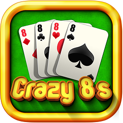

Basic Crazy Eight Gameplay
Crazy Eight is a single game played with 2 or more players and is
played in frames allowing all players to have an equal chance.
Players alternate ends of the board between frames, each player
using all eight pucks (red & blue). The game is played until one
player scores some agreed upon number of points ( 3 points, 15
points, 30 points, etc.).
Frames are continued until a winner is determined. Being the first
to score the agreed upon points does not necessarily make that player
the winner. Every player gets to finish that frame and the highest
score that is equal to or greater than the agreed upon game point
( 3 points, 15 points, 30 points, etc.) is declared the winner.
If the player that scores equal to or greater than the agreed minimum
required points has the hammer (the last player to play), then he/she
is declared the winner. If the last player ties with a prior player,
then another round must be played to determine the winner.
How To Play Crazy Eight
Take 4 pucks [of same color], group them together, and throw them with
one hand. If all 4 pucks do not pass the long foul line and stay on the
board, no points are scored for that round [and player gets a "Hickey"
if your tournament includes a "Hickey Jar"], and next player is up on
the opposite end of the board for their turn.
If all 4 weights of the same color group did pass the long foul line
and stay on the board, then player shoots the remaining 4 weights [of
opposite color] one at a time and attempts to knock off the 1st 4 weights
and keep at least one of the last four weights of the opposite color on
the board to score points (this is great practice for knock off, making
combination shots to remove more than one of the 4 weights with one shot,
and to be able to either stick a final shot or lag with the weights you
have left after you've knocked off all 4 weights of the original color group).
If all of the first color group weights are knocked off and you still
have at least one of the second color on the board and past the long
foul line, this is your score; otherwise, no point is scored [and player
gets a "Hickey" if your tournament includes a "Hickey Jar"]. In either
case, the next player is up on the opposite end of the board for their turn.
Before a Player Can Score
The first 4 pucks (same color) must be thrown simultaneously with one
hand and all 4 pucks must stay on the board and be past the foul line.
If all 4 pucks do not stay on the board, then the player gets no points
for that round and the next player is up to play.
If all 4 pucks do stay on the board past the foul line, then the player
must shoot all 4 pucks (in four shots) of the opposite color and must
knock off those first four pucks thrown past the foul line before any
points can be scored for that frame.
After all 4 original pucks are knocked off, the remaining pucks left
on the table are scored.
For instance, if a player does not get all four of their first 4 pucks
past the foul line, no points are scored; if a player does get all 4
pucks past the foul line on the first throw, but does not knock them
off and keeps at least one of the final 4 pucks on the board, no points
are scored; if a player gets all 4 first pucks past the foul line, knocks
them all off and has at least one of the final 4 pucks left on the
board, points are added and count.
Crazy Eight Scoring Rules
Scoring (e.g., 1-point, 2-points, 3-points, or 4-points) is similar
to "knock off" with the exceptions noted above where first 4 weights
of the same color must remain on the board and past the long foul
line, and then they must all be knocked off with the remaining 4
weights of the opposite color while keeping one or more of these
weights on the board.
A puck scores 1-point if it is located between the long foul line and
the "2" line. Pucks completely across the "2" line count 2-points; pucks
across the "3" line count 3-points, a weight hanging over the end of the
board (a.k.a. hanger) counts 4-points, etc. To judge if a pucks is
completely over a line it should be viewed from above (i.e., look down
over the top of the puck, positioning your nose approximately to the
center of the weight --do not lean over too far or you get an inaccurate
view-- the entire puck must be over the line for it to count as the next
higher point value--you should be able to see some wood between the line
and the puck for it to count as the next higher point.)
If any portion of the puck is hanging over the end of the board (not the
side) it is called a "hanger" and counts 4-points. Close calls can be
checked by holding a puck so the top of a puck is along the back end of
the board. The puck is then slid along the back end of the board. If it
hits the hanger puck it is worth 4-points.
General Shuffleboard Rules
Before a player shoots, the player can dust the board if dry spots are
showing Shooters must have one foot behind the playing surface while
they are shooting. Hitting or shaking the table is never allowed.